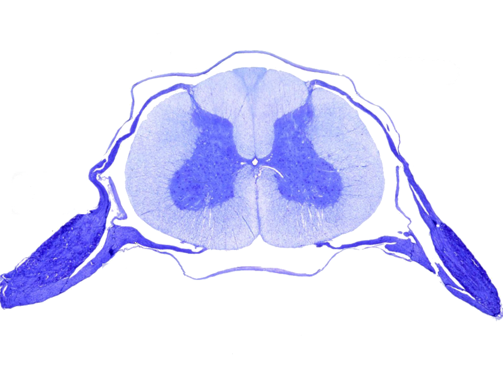

1. Reflex Arc Drag and Drop
Match each label to the correct step in the pathway.
Labels
Pathway Sequence
2. Animated Spinal Cord Structure
Use the controls to highlight structures on a microscopic transverse section.

Structure Notes
Choose a structure to begin
Click any label around the image to see an explanation and visual highlight.
3. Interactive Neurone Diagrams
Hover or tap each highlighted part to compare motor, sensory, and relay neurones.
Motor Neurone
Select labels to explore neurone structure and function.
4. Motor vs Sensory Comparison Sort
Drag each statement to Motor, Sensory, or Both.
Statements
Categories
Motor
Sensory
Both
5. Zoomed Saltatory Conduction Animation
Run an impulse along a myelinated axon and observe how it jumps node-to-node.
Interactive Controls
Impulse ready at Node 1 of 8.
Saltatory conduction allows a signal to travel faster because depolarization is regenerated mainly at nodes of Ranvier, not continuously along every part of the membrane.